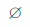
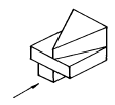
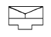
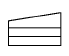
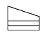
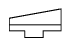
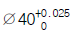
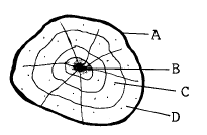

원형기능사 (2004-07-18 기출문제)
1과목: 금속재료일반
1. 상온에서 비중이 약 1.74인 금속은?
- Zn
- Hg
- Sn
- Mg
(정답률: 알수없음)

2. 주철 중에 함유되어 있는 탄소의 함유량(%)은?
- 2.5∼4.5
- 1.0∼1.8
- 0.6∼0.9
- 0.1∼0.5
(정답률: 알수없음)
3. 알파(α)철의 자기변태점은?
- A1
- A2
- A3
- A4
(정답률: 알수없음)
4. 금속 원소 중 모스 경도가 가장 큰 것은?
- Zn
- Mg
- Cu
- Fe
(정답률: 알수없음)
5. 동일 조건에서 비중이 가장 큰 것은?
- 은
- 주석
- 니켈
- 망간
(정답률: 알수없음)
6. 금속의 결정구조에서 FCC는?
- 체심입방격자
- 면심입방격자
- 조밀육방격자
- 주밀체심격자
(정답률: 알수없음)
7. 축전지 전극, 퓨즈, 화폐 등에 사용되는 것으로 밀도가 약 11 인 금속은?
- 망간
- 납
- 아연
- 규소
(정답률: 알수없음)
8. 탄소공구강의 한국산업규격의 기호는?
- SW
- STC
- SKT
- SPH
(정답률: 알수없음)
9. 탄소 함유량이 0.2% 이하인 탄소강에 대한 설명 중 틀린것은?
- 소성가공이 용이하다.
- 냉간가공과 용접성이 좋다.
- 내마멸성과 강도를 필요로 하는 부품의 사용에 적합하다.
- 거의 림드강으로 사용되고 있다.
(정답률: 알수없음)
10. 스테인리스강의 성분 원소에 포함되지 않는 것은?
- 크롬
- 니켈
- 철
- 납
(정답률: 알수없음)
11. 탄소강에서 펄라이트의 혼합조직은?
- 오스테나이트 + 솔바이트
- 오스테나이트 + 페라이트
- 페라이트 + 시멘타이트
- 페라이트 + 마텐자이트
(정답률: 알수없음)
12. 다음 중 감마(γ)철을 나타내는 조직은?
- 페라이트
- 시멘타이트
- 오스테나이트
- 솔바이트
(정답률: 알수없음)
13. 열분석에 의한 금속의 변태점 측정법은?
- 아말감 시험 방법
- 임펄스 투과 방법
- 슴프 시험 방법
- 시간-온도 곡선에 의한 방법
(정답률: 알수없음)
14. 용융점(℃)이 약 1538 인 금속 원소는?
- Pt
- W
- Fe
- Mn
(정답률: 알수없음)
15. 인(P)을 많이 함유한 주철중에 나타나는 철, 인화철, 시멘타이트의 3원 공정조직은?
- 스테아다이트
- 아시큘라이트
- 마그마나이트
- 오스포나이트
(정답률: 알수없음)
16. 제도 도면에서 치수선으로 사용되는 선은?
- 가는 실선
- 중간 굵기의 실선
- 가는 일점 쇄선
- 굵은 실선
(정답률: 알수없음)
17. 도면을 접을 때 기준이 되는 크기는?
- A1
- A2
- A3
- A4
(정답률: 알수없음)
18. 척도에 대한 설명 중 틀린 것은?
- 척도에는 실척, 축척, 배척의 3 종류가 있다.
- 척도는 도면의 표제란에 기입한다.
- 도형이 치수에 비례하지 않을 때는 척도를 기입하지 않고, 별도의 표시도 하지 않는다.
- 척도는 도형의 크기와 실물의 크기와의 비율이다.
(정답률: 알수없음)
19. 다음 현과 호의 제도에 대한 설명으로 틀린 것은?
- 현의 길이를 나타내는 치수선은 현에 평행한 직선으로 나타낸다.
- 호의 길이를 나타내는 치수선은 호와 동심원으로 나타낸다.
- 현과 호를 구별할 때는 치수 숫자 앞에 현 또는 호라고 쓴다.
- 2개 이상의 원호일지라도 한 곳에만 표시한다.
(정답률: 알수없음)
20. 제도에서 치수숫자와 같이 사용하는 기호가 아닌 것은?

- R
- □
- Y
(정답률: 알수없음)
2과목: 금속제도
21. 도면에 기입된 "43 - 20 드릴" 표시에서 43 이 뜻하는 것은?
- 드릴 지름
- 드릴 구멍수
- 드릴 구멍간격
- 드릴 구멍깊이
(정답률: 알수없음)
22. 다음 물체의 3각법의 우측면도를 옳게 나타낸 것은?(단, 화살표는 정면을 나타냄)





(정답률: 알수없음)
23. 기계구조용 탄소강재 "S M 45 C"에서 45가 뜻하는 것은?
- 최저인장강도
- 탄소함유량
- 종별기호
- 두께
(정답률: 알수없음)
24.

의 설명으로 잘못된 것은?- 치수공차 : 0.025
- 최소 허용치수 : 39.975
- 최대 허용치수 : 40.025
- 아래 치수허용차 : 0
(정답률: 알수없음)
25. 나사 도시에서 완전 나사부와 불완전 나사부의 경계를 나타내는 선은?
- 굵은 실선
- 가는 일점쇄선
- 가는 이점쇄선
- 숨은선
(정답률: 알수없음)
26. 도형의 일부를 도시하는 것으로 충분한 경우에 그 필요한 일부분만 그린 투상도는?
- 보조 투상도
- 부분 투상도
- 회전 투상도
- 부분 확대도
(정답률: 알수없음)
27. 도면에서 표제란의 원칙적인 위치는?
- 왼쪽 위
- 왼쪽 아래
- 오른쪽 위
- 오른쪽 아래
(정답률: 알수없음)
28. 금형을 만드는데 가장 중요한 금형재료의 성질은?
- 연성
- 내구성
- 메짐성
- 전성
(정답률: 알수없음)
29. 미술 주물의 제작에 가장 많이 쓰이는 것은?
- 진토형
- 왁스형
- 수지형
- 석고형
(정답률: 알수없음)
30. 구멍뚫린 주물의 제품을 만들 때 사용되는 것은?
- 부분형
- 코어형
- 회전형
- 고르개형
(정답률: 알수없음)
31. 현형 목형에서 실제 물건에서는 나타나지 않는 부분은?
- 코어프린트
- 모서리
- 라운딩
- 수평
(정답률: 알수없음)
32. 아교로 붙여 접합한 부분을 절삭할 때 밀리지 않도록 튼튼히 고정하여 작업하기에 알맞도록 한 것은?
- 대못
- 쇠못
- 꺽쇠
- 만력
(정답률: 알수없음)
33. 대패에 덧날을 끼우는 가장 중요한 이유는?
- 원날이 잘 빠지게 하기 위해
- 작업에 힘이 덜들게
- 날이 흔들리지 않게
- 대패밥에 거슬럼이 일지 않게
(정답률: 알수없음)
34. 연재의 경우 대팻날의 절삭각으로 가장 적합한 것은?
- 15°
- 35°
- 50°
- 90°
(정답률: 알수없음)
35. 등대기톱과 같은 형상을 가지고 있으며 짧고 정밀하게 켜는데 쓰이는 톱은?
- 양날톱
- 세공톱
- 활톱
- 오림톱
(정답률: 알수없음)
36. 자동 대패 작업을 할 때 가장 위험한 것은?
- 길이가 짧은 목재는 깍지 않는다.
- 충분히 회전시킨 다음 사용한다.
- 한번에 3mm 이상을 깍는다.
- 길이가 200mm 이상의 것을 깍는다.
(정답률: 알수없음)
37. 나무의 벌채 시기로 가장 적당한 것은?
- 수액이 적을 때
- 여름철
- 유년기
- 성장 작용이 계속될 때
(정답률: 알수없음)
38. 접착제 중 합성수지계의 성분이 아닌 것은?
- 석탄산
- 질산
- 요소포르말린
- 아세틸렌
(정답률: 알수없음)
39. 다음 그림에서 목형용 재료로 가장 적합한 부분은?

- A
- B
- C
- D
(정답률: 알수없음)
40. 잔형(殘型)에 대한 사항 중 틀린 것은?
- 잔형은 큰 목형이나 복잡한 목형에 쓰인다.
- 본체에서 유리할 수 있게 붙이는 형이다.
- 본체형을 뽑아낸 후 나머지 형을 뽑을 때의 형이다.
- 목형의 본체만을 제작하는 형이다.
(정답률: 알수없음)
3과목: 원형제작
41. 목형제작을 할 때 가공여유의 설명이 맞는 것은?
- 비틀리는 방향에 주로 해당된다.
- 절삭부분에 가공기호와 정밀도를 나타낸다.
- 형상이 작고 제조수량이 많은 주물에 사용된다.
- 대량생산의 경우 가능한 많게 한다.
(정답률: 알수없음)
42. 띠톱 기계로 재료를 절단할 때 주의사항 중 틀린 것은?
- 지름이 큰 둥근막대를 절단할 때는 두손으로 단단히 쥐고 절단하여야 한다.
- 띠톱날을 너무 팽창하거나 늦추어서는 안된다.
- 판재는 테이블에 밀착시켜 밀어야 한다.
- 작업시는 장갑을 끼어서는 안된다.
(정답률: 알수없음)
43. 현도 작성시 유의사항 중 틀린 것은?
- 가능한한 기계가공면을 많게 한다.
- 보강용 리브는 원살두께보다 얇게 한다.
- 구조는 밀폐식을 피하고 개방식으로 한다.
- 신축되지 않은 두곳을 연결하는 아암(arm)등에는 직선보다 곡선을 사용한다.
(정답률: 알수없음)
44. 목재의 함수율을 측정하기 위하여 시료를 건조하려면 건조기의 건조 온도를 몇도로 하는가?
- 70 ∼ 90℃
- 100 ∼ 1⑤℃
- 130 ± 5℃
- 145 ± 5℃
(정답률: 알수없음)
45. 주형에서 목형을 뽑아낼 때 어느 일부분을 뽑아낼 수 없는 곳이 있으면 그 부분만을 미리 분할한 것으로서 먼저 본체를 뽑은 다음 턱 쪽을 뽑아내는 형은?
- 겹침형
- 일부조립형
- 반쪽형
- 단체형
(정답률: 알수없음)
46. 목형제작 순서를 가장 바르게 나타낸 것은?
- 목형제작→ 목재준비→ 현도→ 도면
- 도면→ 현도→ 목재준비→ 목형제작
- 현도→ 목형제작→ 도면→ 목재준비
- 목재준비→ 현도→ 목형제작→ 도면
(정답률: 알수없음)
47. 왁스원형의 구비조건이 아닌 것은?
- 변형이 작을 것
- 형에서 떨어지지 않을 것
- 회분이 적을 것
- 연화점이 높을 것
(정답률: 알수없음)
48. 제품의 단면이 작고 지름이 일정하며 길이가 길 때 어느 목형으로 만들면 가장 좋은가?
- 분할형
- 회전형
- 단체형
- 긁기형
(정답률: 알수없음)
49. 1자 2치각 길이 9자 목재는 몇 사이인가?
- 108
- 90
- 54
- 16
(정답률: 알수없음)
50. 목형의 도장작업에 필요한 도구가 아닌 것은?
- 붓
- 도료 용기
- 스프레이건
- 로울러
(정답률: 알수없음)
51. 안전모를 사용하는 주 목적은?
- 보온을 위하여
- 추락재해를 방지하기 위하여
- 작업장소를 알리기 위하여
- 작업중이라는 것을 알리기 위하여
(정답률: 알수없음)
52. 위험 유해물 작업상의 안전수칙 중 틀린 것은?
- 위험물 용기에는 품명을 흑색으로 명백히 표시하고 밀폐된 장소에 보관할 것
- 인화물질은 직사광선이 쪼이는 장소, 온도가 높은 장소, 화기주변에는 두지말 것
- 위험물 취급시 필요이상의 양을 작업장에 지참 하지 말 것
- 환기장치를 유효하게 사용하고 통풍이 잘되게 만들어 둘 것
(정답률: 알수없음)
53. 방화조치로서 적당치 못한 것은?
- 화기는 정해진 장소에서 취급한다.
- 흡연은 지정된 장소에서만 한다.
- 기름걸레 등은 정해진 용기에만 보관한다.
- 유류 취급장소에서는 방화수가 가장 좋다.
(정답률: 알수없음)
54. 작업장의 조명에 필요한 조건 중 틀린 것은?
- 작업의 종류에 따라 충분한 밝기로 할 것
- 광원이 흔들리지 않을 것
- 보통의 작업상태에서 눈이 부실 것
- 작업면과 그 주변의 밝기가 크게 다르지 않을 것
(정답률: 알수없음)
55. 목공용 끌의 규격으로 맞는 것은?
- 앞날의 나비
- 끌날의 길이
- 끌자루의 길이
- 끌목의 길이
(정답률: 알수없음)
56. 주조용 금형의 특징이 틀린 것은?
- 치수 변화가 거의 없고 내구성이 높다.
- 표면이 깨끗하다.
- 목형에 비해 무겁고 제작비가 적게 든다.
- 대량 생산인 경우 경제적이다.
(정답률: 알수없음)
57. 지름에 변화가 있고 동심원형인 직선관이나 원뿔 모양의 주물을 제작할 때 사용하는 원형으로 가장 적합한 것은?
- 현물형
- 단체형
- 골격형
- 회전 긁기형
(정답률: 알수없음)
58. 기어 종류를 제작할 때 사용하는 것으로 긁어내는 부분은 단단한 나무로 만들고 높이가 큰 것일 때에는 2개의 판을 턱맞춤하여 목재를 절약하는 마름질은?
- 회전형 마름질
- 긁기형 마름질
- 골격형 마름질
- 나선형 마름질
(정답률: 알수없음)
59. 원형의 원가 계산의 일반적인 항목 구성으로 옳은 것은?
- 원형재질, 사용용도, 노무비
- 자재비, 노무비, 제경비
- 자재비, 제경비, 사용용도
- 자재비, 노무비, 생산수량
(정답률: 알수없음)
60. 목형을 검사할 때 유의할 사항과 관련이 가장 먼 것은?
- 분할면, 코어프린트, 중심선과 치수, 수축 여유
- 제작자의 목형제작 경력과 특기 사항
- 원형기울기와 라운딩 및 보정 여유와 고정 여유
- 목형에 대한 특기 사항의 표시 및 도장 상태
(정답률: 알수없음)